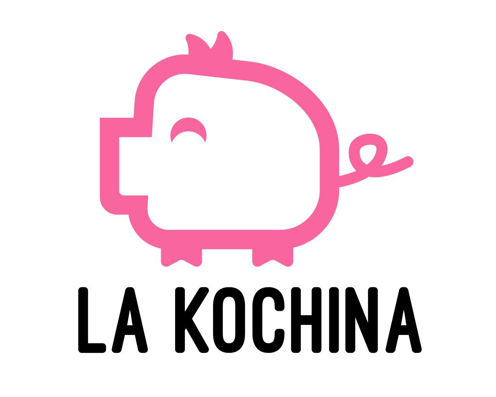

<nav class="text-white p-4 flex justify-between items-center absolute w-full">
  <div class="flex items-center justify-between w-full">
    <div class="logo">
      
    </div>
    <button
      class="lg:hidden text-white focus:outline-none"
      (click)="toggleMenu()"
      [@burgerMenuAnimation]="showMenu ? 'open' : 'closed'"
    >
      <svg
        class="w-6 h-6"
        fill="none"
        stroke="currentColor"
        viewBox="0 0 24 24"
        xmlns="http://www.w3.org/2000/svg"
      >
        <path
          stroke-linecap="round"
          stroke-linejoin="round"
          stroke-width="2"
          d="M4 6h16M4 12h16m-7 6h7"
        ></path>
      </svg>
    </button>
  </div>
</nav>

<section *ngIf="showMenu" class="absolute w-full h-screen bg-bone z-50">
  <span (click)="toggleMenu()" class="absolute text-3xl text-pinkMain -translate-x-2/4 -translate-y-1/2 top-[8%] left-[85%]"><i class="fas fa-times-circle" style="color: #f9659f;"></i></span>
  <div  class="absolute text-3xl text-pinkMain -translate-x-2/4 -translate-y-1/2 top-1/2 left-2/4 uppercase">
    <!-- Add your menu items here -->
    <a (click)="onHome()" class="block  py-2">Home</a>
    <a (click)="onMenu()" class="block py-2">Menu</a>
    <a (click)="onContact()" class="block py-2">Contact</a>
  </div>
</section>